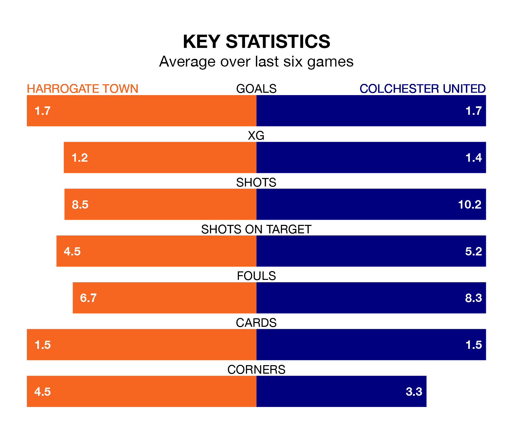

Harrogate Town face Colchester United on Saturday seeking to protect their long unbeaten run in EFL League Two.
Harrogate are unbeaten in five, with three wins and two draws, ahead of the 3pm kick-off.
They face a Colchester team who have won one and drawn three over the same number of games.
In the last 10 years, Harrogate and Colchester have played each other on seven occasions. Harrogate won two of them and Colchester five.
On average, Harrogate scored 1.3 goals and the U's 1.6 in those matches.
Their last meeting was on October 21, when Harrogate won 2-1 away.
Colchester are 21st in the table after 30 games, of which they have won eight and drawn five, earning 29 points.
Harrogate are 13 places ahead of United in eighth, with 13 wins and five draws putting them on 44 points.
With 37 goals in 29 games so far this season, Town are scoring at below the league average rate with 1.3 goals per game. But they are conceding fewer than average too, letting in 37 goals at a rate of 1.3 per game.
The U's are also below average scorers, with 1.4 goals per game, compared to a league average of 1.5. They have conceded 1.9 goals per game.
The hosts' Matty Daly is among the league's most creative players, racking up eight assists in 23 appearances so far this season, and holding second spot in EFL League Two's assist charts.
For the away team, Arthur Read has set up the most goals, having laid on four assists in 27 games.
Harrogate's last match was on February 3, a 1-1 draw against Stockport County, with Dean Cornelius getting the goal for Harrogate.
Colchester drew 3-3 with Forest Green Rovers last time out, also on February 3, with Alistair Smith, Harry Anderson and Jayden Seurier on the scoresheet.
Updated: 11:43 (UTC), 08/02/24